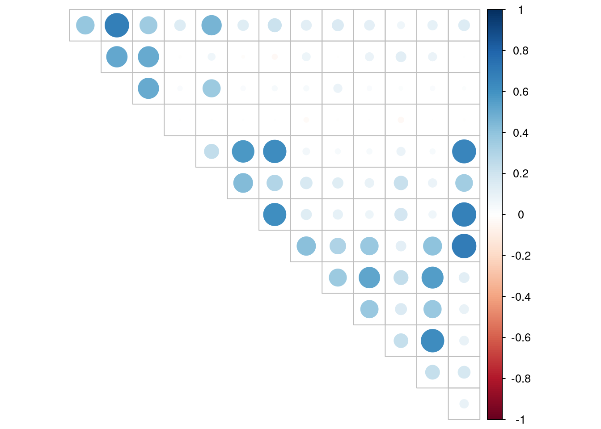
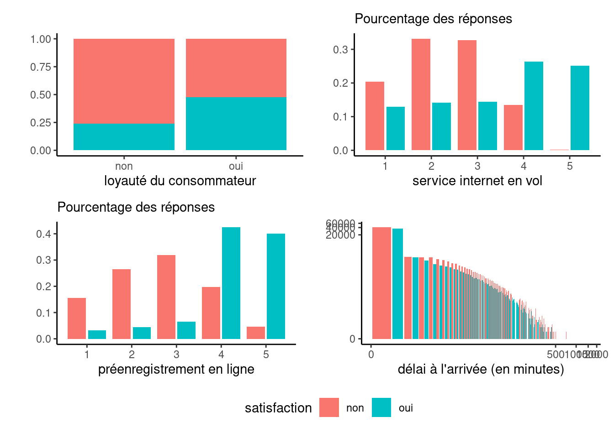
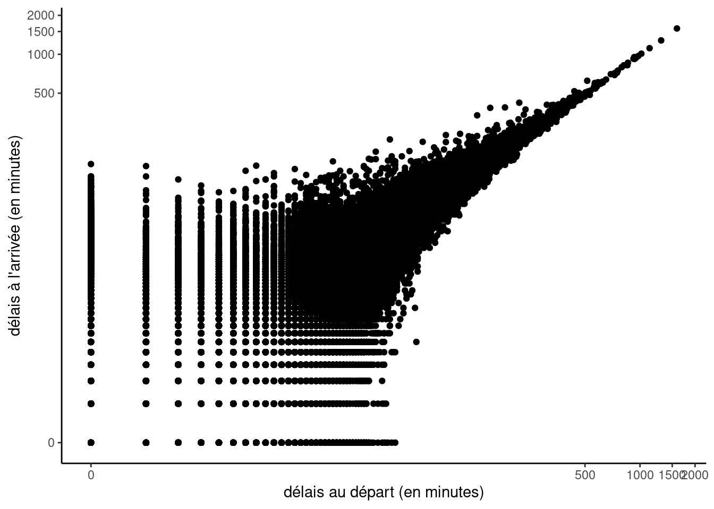

Code
# remotes::install_github("lbelzile/hecmulti")
data(aerien, package = "hecmulti")
# Consulter la fiche descriptive
# ? hecmulti::aerienOn commence par charger la base de données
1. Formulez des questions en lien avec la description de la base de données préliminaires à l’analyse exploratoire.
Pour démarrer notre analyse exploratoire, on formule quelques questions. Par exemple:
distance_vol)? On peut penser que l’offre alimentaire dépend de la durée.2. Examinez la base de données; identifiez le type de variable et leur nature.
Classes 'tbl_df', 'tbl' and 'data.frame': 129880 obs. of 23 variables:
$ sexe : Factor w/ 2 levels "femme","homme": 1 1 2 2 1 2 1 1 2 1 ...
$ loyaute_consommateur : Factor w/ 2 levels "non","oui": 2 2 1 2 2 2 2 2 2 2 ...
$ age : int 52 36 20 44 49 16 77 43 47 46 ...
$ type_deplacement : Factor w/ 2 levels "affaires","personnel": 1 1 1 1 1 1 1 1 1 1 ...
$ classe : Factor w/ 3 levels "affaire","eco",..: 2 1 2 1 2 2 1 1 2 1 ...
$ distance_vol : num 160 2863 192 3377 1182 ...
$ service_internet_en_vol : int 5 1 2 0 2 3 5 2 5 2 ...
$ temps_arrivee_depart_convenable: int 4 1 0 0 3 3 5 2 2 2 ...
$ facilite_reservation_en_ligne : int 3 3 2 0 4 3 5 2 2 2 ...
$ localisation_porte : int 4 1 4 2 3 3 5 2 2 2 ...
$ nourriture : int 3 5 2 3 4 5 3 4 5 3 ...
$ preenregistrement_en_ligne : int 4 4 2 4 1 5 5 4 5 4 ...
$ confort_siege : int 3 5 2 4 2 3 5 5 5 4 ...
$ divertissement_en_vol : int 5 4 2 1 2 5 5 4 5 4 ...
$ service_embarquement : int 5 4 4 1 2 4 5 4 2 4 ...
$ service_espace_jambes : int 5 4 1 1 2 3 5 4 2 4 ...
$ gestion_bagages : int 5 4 3 1 2 1 5 4 5 4 ...
$ service_enregistrement : int 2 3 2 3 4 1 4 5 3 5 ...
$ service_vol : int 5 4 2 1 2 2 5 4 3 4 ...
$ proprete : int 5 5 2 4 4 5 3 3 5 4 ...
$ delai_depart_min : int 50 0 0 0 0 0 0 77 1 28 ...
$ delai_arrivee_min : int 44 0 0 6 20 0 0 65 0 14 ...
$ satisfaction : Factor w/ 2 levels "non","oui": 2 2 1 2 2 2 2 2 2 2 ... sexe loyaute_consommateur age type_deplacement
femme:65899 non: 23780 Min. : 7.00 affaires :89693
homme:63981 oui:106100 1st Qu.:27.00 personnel:40187
Median :40.00
Mean :39.43
3rd Qu.:51.00
Max. :85.00
classe distance_vol service_internet_en_vol
affaire:62160 Min. : 31 Min. :0.000
eco :58309 1st Qu.: 414 1st Qu.:2.000
ecoplus: 9411 Median : 844 Median :3.000
Mean :1190 Mean :2.729
3rd Qu.:1744 3rd Qu.:4.000
Max. :4983 Max. :5.000
temps_arrivee_depart_convenable facilite_reservation_en_ligne
Min. :0.000 Min. :0.000
1st Qu.:2.000 1st Qu.:2.000
Median :3.000 Median :3.000
Mean :3.058 Mean :2.757
3rd Qu.:4.000 3rd Qu.:4.000
Max. :5.000 Max. :5.000
localisation_porte nourriture preenregistrement_en_ligne confort_siege
Min. :0.000 Min. :0.000 Min. :0.000 Min. :0.000
1st Qu.:2.000 1st Qu.:2.000 1st Qu.:2.000 1st Qu.:2.000
Median :3.000 Median :3.000 Median :3.000 Median :4.000
Mean :2.977 Mean :3.205 Mean :3.253 Mean :3.441
3rd Qu.:4.000 3rd Qu.:4.000 3rd Qu.:4.000 3rd Qu.:5.000
Max. :5.000 Max. :5.000 Max. :5.000 Max. :5.000
divertissement_en_vol service_embarquement service_espace_jambes
Min. :0.000 Min. :0.000 Min. :0.000
1st Qu.:2.000 1st Qu.:2.000 1st Qu.:2.000
Median :4.000 Median :4.000 Median :4.000
Mean :3.358 Mean :3.383 Mean :3.351
3rd Qu.:4.000 3rd Qu.:4.000 3rd Qu.:4.000
Max. :5.000 Max. :5.000 Max. :5.000
gestion_bagages service_enregistrement service_vol proprete
Min. :1.000 Min. :0.000 Min. :0.000 Min. :0.000
1st Qu.:3.000 1st Qu.:3.000 1st Qu.:3.000 1st Qu.:2.000
Median :4.000 Median :3.000 Median :4.000 Median :3.000
Mean :3.632 Mean :3.306 Mean :3.642 Mean :3.286
3rd Qu.:5.000 3rd Qu.:4.000 3rd Qu.:5.000 3rd Qu.:4.000
Max. :5.000 Max. :5.000 Max. :5.000 Max. :5.000
delai_depart_min delai_arrivee_min satisfaction
Min. : 0.00 Min. : 0.00 non:73452
1st Qu.: 0.00 1st Qu.: 0.00 oui:56428
Median : 0.00 Median : 0.00
Mean : 14.71 Mean : 15.09
3rd Qu.: 12.00 3rd Qu.: 13.00
Max. :1592.00 Max. :1584.00
NA's :393 La plupart des variables, dont les colonnes 7 à 20 qui contiennent les réponses au questionnaire, sont des variables entières (int) formées d’échelles de Likert de 1 à 5; les valeurs manquantes encodées 0. Le sexe, la classe, le type de déplacement sont des variables catégorielles nominales. La satisfaction globale et l’indice de fidélité du consommateur sont binaires et ordinales. La distance du vol est continue et encodée comme numérique (dbl). Les délais sont encodées avec des valeurs entières (valeur arrondie).
3. Y a-t-il des valeurs manquantes? Si oui, pour quelles variables? Serait-il logique de les imputer par leur moyenne, dans le cas présent?
Oui, il y a des valeurs manquantes. Selon la description (voir la section Détails sous ?hecmulti::aerien), toutes les valeurs 0 dans les questionnaires encodent des chanmps non applicables. Les imputer par la moyenne serait donc illogique, puisque certains services (divertissement, nourriture) ne sont pas offerts dans ces vols. Selon ce qui nous intéresse, on pourrait faire une segmentation manuelle de la base de données pour prendre le sous-ensemble qui nous intéresse.
Il serait possible en revanche d’imputer l’information pour les valeurs de délai (393 valeurs manquantes).
4. Calculez les statistiques descriptives pour les variables continues et produisez des tableaux de fréquence ou de contingence pour les variables catégorielles. Que remarquez-vous?
A minima, il faut transformer les zéros en valeurs manquantes pour éviter de fausser les résultats. Il serait aussi préférable de transformer les scores des items du questionnaire en variables catégorielles.
sexe loyaute_consommateur age type_deplacement
femme:65899 non: 23780 Min. : 7.00 affaires :89693
homme:63981 oui:106100 1st Qu.:27.00 personnel:40187
Median :40.00
Mean :39.43
3rd Qu.:51.00
Max. :85.00
classe distance_vol service_internet_en_vol
affaire:62160 Min. : 31 Min. :1.000
eco :58309 1st Qu.: 414 1st Qu.:2.000
ecoplus: 9411 Median : 844 Median :3.000
Mean :1190 Mean :2.814
3rd Qu.:1744 3rd Qu.:4.000
Max. :4983 Max. :5.000
NA's :3916
temps_arrivee_depart_convenable facilite_reservation_en_ligne
Min. :1.000 Min. :1.000
1st Qu.:2.000 1st Qu.:2.000
Median :3.000 Median :3.000
Mean :3.223 Mean :2.883
3rd Qu.:4.000 3rd Qu.:4.000
Max. :5.000 Max. :5.000
NA's :6681 NA's :5682
localisation_porte nourriture preenregistrement_en_ligne confort_siege
Min. :1.000 Min. :1.000 Min. :1.000 Min. :1.000
1st Qu.:2.000 1st Qu.:2.000 1st Qu.:2.000 1st Qu.:2.000
Median :3.000 Median :3.000 Median :4.000 Median :4.000
Mean :2.977 Mean :3.208 Mean :3.332 Mean :3.441
3rd Qu.:4.000 3rd Qu.:4.000 3rd Qu.:4.000 3rd Qu.:5.000
Max. :5.000 Max. :5.000 Max. :5.000 Max. :5.000
NA's :1 NA's :132 NA's :3080 NA's :1
divertissement_en_vol service_embarquement service_espace_jambes
Min. :1.000 Min. :1.000 Min. :1.000
1st Qu.:2.000 1st Qu.:2.000 1st Qu.:2.000
Median :4.000 Median :4.000 Median :4.000
Mean :3.359 Mean :3.383 Mean :3.366
3rd Qu.:4.000 3rd Qu.:4.000 3rd Qu.:4.000
Max. :5.000 Max. :5.000 Max. :5.000
NA's :18 NA's :5 NA's :598
gestion_bagages service_enregistrement service_vol proprete
Min. :1.000 Min. :1.000 Min. :1.000 Min. :1.000
1st Qu.:3.000 1st Qu.:3.000 1st Qu.:3.000 1st Qu.:2.000
Median :4.000 Median :3.000 Median :4.000 Median :3.000
Mean :3.632 Mean :3.306 Mean :3.642 Mean :3.287
3rd Qu.:5.000 3rd Qu.:4.000 3rd Qu.:5.000 3rd Qu.:4.000
Max. :5.000 Max. :5.000 Max. :5.000 Max. :5.000
NA's :1 NA's :5 NA's :14
delai_depart_min delai_arrivee_min satisfaction
Min. : 0.00 Min. : 0.00 non:73452
1st Qu.: 0.00 1st Qu.: 0.00 oui:56428
Median : 0.00 Median : 0.00
Mean : 14.71 Mean : 15.09
3rd Qu.: 12.00 3rd Qu.: 13.00
Max. :1592.00 Max. :1584.00
NA's :393 sexe loyaute_consommateur age type_deplacement
femme:65899 non: 23780 Min. : 7.00 affaires :89693
homme:63981 oui:106100 1st Qu.:27.00 personnel:40187
Median :40.00
Mean :39.43
3rd Qu.:51.00
Max. :85.00
classe distance_vol service_internet_en_vol
affaire:62160 Min. : 31 1 :22328
eco :58309 1st Qu.: 414 2 :32320
ecoplus: 9411 Median : 844 3 :32185
Mean :1190 4 :24775
3rd Qu.:1744 5 :14356
Max. :4983 NA's: 3916
temps_arrivee_depart_convenable facilite_reservation_en_ligne
1 :19409 1 :21886
2 :21534 2 :30051
3 :22378 3 :30393
4 :31880 4 :24444
5 :27998 5 :17424
NA's: 6681 NA's: 5682
localisation_porte nourriture preenregistrement_en_ligne confort_siege
1 :21991 1 :16051 1 :13261 1 :15108
2 :24296 2 :27383 2 :21934 2 :18529
3 :35717 3 :27794 3 :27117 3 :23328
4 :30466 4 :30563 4 :38468 4 :39756
5 :17409 5 :27957 5 :26020 5 :33158
NA's: 1 NA's: 132 NA's: 3080 NA's: 1
divertissement_en_vol service_embarquement service_espace_jambes
1 :15675 1 :14787 1 :12895
2 :21968 2 :18351 2 :24540
3 :23884 3 :28542 3 :25056
4 :36791 4 :38703 4 :35886
5 :31544 5 :29492 5 :30905
NA's: 18 NA's: 5 NA's: 598
gestion_bagages service_enregistrement service_vol proprete
1: 9028 1 :16108 1 : 8862 1 :16729
2:14362 2 :16102 2 :14308 2 :20113
3:25851 3 :35453 3 :25316 3 :30639
4:46761 4 :36333 4 :47323 4 :33969
5:33878 5 :25883 5 :34066 5 :28416
NA's: 1 NA's: 5 NA's: 14
delai_depart_min delai_arrivee_min satisfaction
Min. : 0.00 Min. : 0.00 non:73452
1st Qu.: 0.00 1st Qu.: 0.00 oui:56428
Median : 0.00 Median : 0.00
Mean : 14.71 Mean : 15.09
3rd Qu.: 12.00 3rd Qu.: 13.00
Max. :1592.00 Max. :1584.00
NA's :393 # Moyenne et écart-type par variable
# selon niveau de satisfaction
aerien |>
group_by(satisfaction) |>
summarize(across(where(is.numeric),
~ mean(.x, na.rm = TRUE),
.names = "moy_{.col}")) |>
# Pivoter tableau
tidyr::pivot_longer(cols = -1,
names_to = "variable",
names_prefix = "moy_",
values_to = "moyenne") |>
arrange(variable) |> # trier
knitr::kable(digits = 2)| satisfaction | variable | moyenne |
|---|---|---|
| non | age | 37.65 |
| oui | age | 41.74 |
| non | confort_siege | 3.04 |
| oui | confort_siege | 3.97 |
| non | delai_arrivee_min | 17.06 |
| oui | delai_arrivee_min | 12.53 |
| non | delai_depart_min | 16.41 |
| oui | delai_depart_min | 12.51 |
| non | distance_vol | 929.72 |
| oui | distance_vol | 1529.54 |
| non | divertissement_en_vol | 2.89 |
| oui | divertissement_en_vol | 3.96 |
| non | facilite_reservation_en_ligne | 2.62 |
| oui | facilite_reservation_en_ligne | 3.24 |
| non | gestion_bagages | 3.37 |
| oui | gestion_bagages | 3.97 |
| non | localisation_porte | 2.98 |
| oui | localisation_porte | 2.97 |
| non | nourriture | 2.96 |
| oui | nourriture | 3.53 |
| non | preenregistrement_en_ligne | 2.71 |
| oui | preenregistrement_en_ligne | 4.15 |
| non | proprete | 2.93 |
| oui | proprete | 3.75 |
| non | service_embarquement | 3.02 |
| oui | service_embarquement | 3.86 |
| non | service_enregistrement | 3.04 |
| oui | service_enregistrement | 3.65 |
| non | service_espace_jambes | 3.01 |
| oui | service_espace_jambes | 3.83 |
| non | service_internet_en_vol | 2.40 |
| oui | service_internet_en_vol | 3.39 |
| non | service_vol | 3.39 |
| oui | service_vol | 3.97 |
| non | temps_arrivee_depart_convenable | 3.29 |
| oui | temps_arrivee_depart_convenable | 3.14 |
On note que 82 % des résultats sont pour des clients. L’âge médian est de 40 ans, et la majorité des déplacements sont pour affaires, soit environ 69 pourcent. Il y a presque autant d’hommes que de femmes. Les personnes qui disposent d’une carte fidélité voyagent davantage en classe affaire (presque la moitié des vols).
| loyaute_consommateur | classe | cnt | freq |
|---|---|---|---|
| non | affaire | 9231 | 38.82% |
| non | eco | 13634 | 57.33% |
| non | ecoplus | 915 | 3.85% |
| oui | affaire | 52929 | 49.89% |
| oui | eco | 44675 | 42.11% |
| oui | ecoplus | 8496 | 8.01% |
Il y a une forte corrélation entre certains items du questionnaire, ce qui est logique parce que ces questions capturent souvent des concepts communs (services, enregistrement, confort).

5. Représentez graphiquement la distribution de quelques variables de la base de données selon les différents niveaux de satisfaction.
library(ggplot2)
theme_set(theme_classic())
g1 <- ggplot(data = aerien,
aes(x = loyaute_consommateur,
fill = satisfaction)) +
geom_bar(position = "fill") +
labs(y = "",
x = "loyauté du consommateur")
g2 <- aerien |>
count(service_internet_en_vol,
satisfaction) |>
group_by(satisfaction) |>
mutate(pct = n / sum(n)) |>
ggplot(aes(x = service_internet_en_vol,
y = pct,
fill = satisfaction)) +
geom_bar(stat = "identity",
position = "dodge2") +
labs(y = "",
subtitle = "Pourcentage des réponses",
x = "service internet en vol")
g3 <- aerien |>
count(preenregistrement_en_ligne,
satisfaction) |>
group_by(satisfaction) |>
mutate(pct = n / sum(n)) |>
ggplot(aes(x = preenregistrement_en_ligne,
y = pct,
fill = satisfaction)) +
geom_bar(stat = "identity",
position = "dodge2") +
labs(y = "",
subtitle = "Pourcentage des réponses",
x = "préenregistrement en ligne")
g4 <- ggplot(data = aerien,
aes(x = delai_arrivee_min,
fill = satisfaction)) +
geom_histogram(boundary = 0,
binwidth = 2,
position = "dodge2") +
coord_trans(x = 'log1p',
y = 'log1p') +
labs(y = "",
x = "délai à l'arrivée (en minutes)")
g5 <- ggplot(data = aerien,
aes(x = delai_depart_min,
y = delai_arrivee_min),
alpha = 0.5) +
geom_point() +
labs(x = "délais au départ (en minutes)",
y = "délais à l'arrivée (en minutes)") +
coord_trans(x = "log1p",
y = "log1p")
library(patchwork)
# Imprimer plusieurs graphiques
(g1 + g2) / (g3 + g4) +
plot_layout(guides = "collect") & theme(legend.position = "bottom")

On voit clairement qu’il y a de grandes disparités pour la satisfaction. Il est peu surprenant de constater que les personnes qui ne sont pas globalement satisfaites accordent des notes plus faibles aux différents items du questionnaire. Certains items (accès internet en vol, facilité du préenregistrement) semblent avec un impact important sur la satisfaction globale.
À mesure que les délais au départ augmentent, la relation avec le délai à l’arrivée se renforce, mais la corrélation linéaire est plus faible pour les petits retards. On voit que seuls sont enregistrés les retards (un vol qui arrive à l’avance est comptabilisé comme étant à l’heure avec une valeur de zéro).
6. Résumez les faits saillants de votre analyse exploratoire en cinq à 10 points.